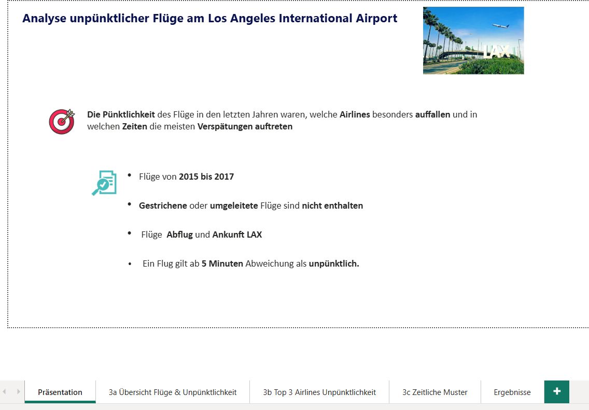
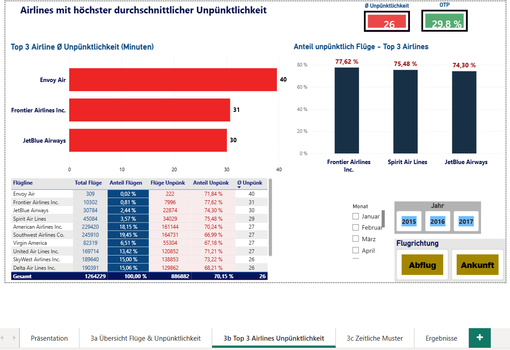
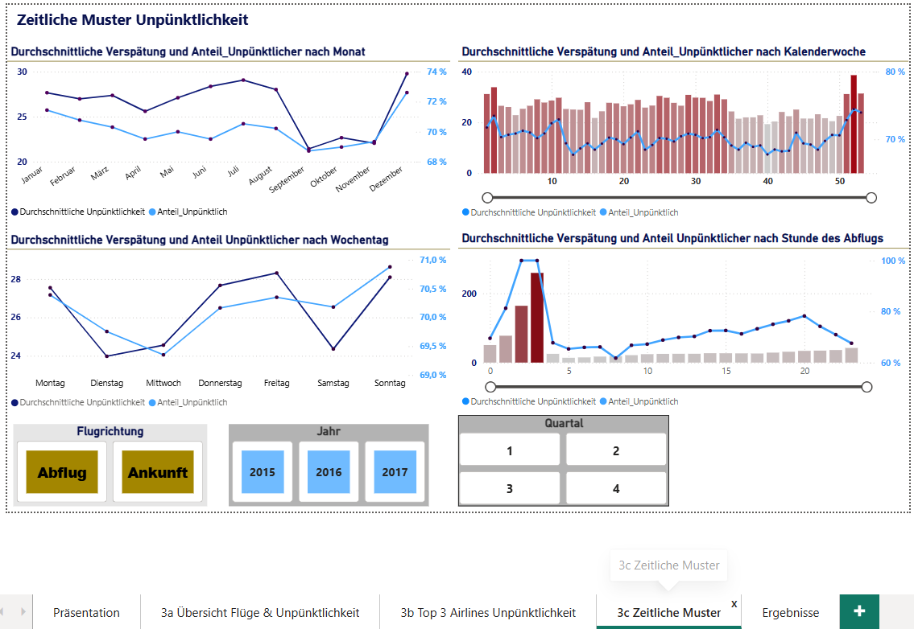
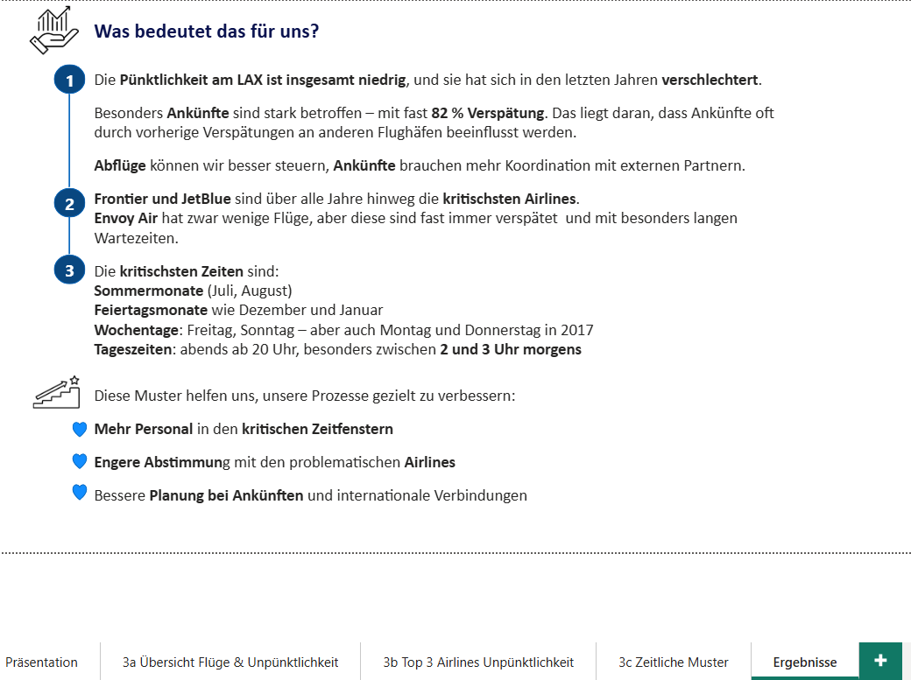

Pünktlichkeitsanalyse LAX Airport
Für den Flughafenbetreiber fLAirport sollte ein abteilungsübergreifender Bericht zur Pünktlichkeit am Los Angeles International Airport entstehen — als gemeinsame Diskussionsgrundlage für eine 15-minütige Präsentation vor den Führungskräften.
Kontext & Fragestellung
Unpünktliche Flüge am größten Standort der Fluggesellschaft, dem Los Angeles International Airport, sollten routinemäßig untersucht werden. Ziel war ein aktueller Überblick der Lage sowie die Identifikation von Häufungen, auf die interne Prozesse abgestimmt werden können — getrennt betrachtet nach Abflug und Ankunft.
Konkret sollten folgende Fragen beantwortet werden:
- Wie sehen die wichtigsten Kennzahlen rund um Flüge und Pünktlichkeit aus?
- Welche drei Airlines haben die höchste durchschnittliche Unpünktlichkeit pro Flug, und wie hoch ist ihr Anteil unpünktlicher Flüge?
- In welchen Zeiträumen treten besonders unpünktliche Flüge auf — lassen sich wiederkehrende Muster erkennen?
Datengrundlage waren die Flugdaten von 2015 bis 2017, ausschließlich Flüge mit Abflug oder Ankunft in LAX. Gestrichene oder umgeleitete Flüge blieben außen vor. Ein Flug galt ab 5 Minuten Abweichung von der geplanten Zeit als unpünktlich.

Vorgehen
Die Flugdaten wurden in Power BI Desktop geladen, bereinigt und in ein Datenmodell überführt. Mit berechneten Kennzahlen (DAX) entstanden die zentralen KPIs zur Pünktlichkeit, ergänzt um Filter für Flugrichtung (Abflug/Ankunft) sowie Jahr, Monat, Kalenderwoche, Wochentag und Stunde — damit lässt sich jede Kennzahl flexibel nach Zeitraum und Richtung aufschlüsseln. Die Ergebnisse wurden abschließend als Führungskräfte-Präsentation nach den Grundsätzen des Data Storytelling aufbereitet: Kontext, Narrativ und Visualisierung.
1. Übersicht der wichtigsten Kennzahlen
Von insgesamt 1,26 Millionen Flügen waren 70,15 % unpünktlich — im Schnitt um 26 Minuten, bei einer durchschnittlichen Abweichung von 19 Minuten über alle Flüge hinweg. Etwas mehr Flüge waren zu früh als zu spät (50,17 % vs. 49,83 %). Die Übersicht lässt sich nach Airline, Jahr, Monat und Flugrichtung filtern.

2. Airlines mit höchster Unpünktlichkeit
Nach durchschnittlicher Verspätung pro Flug führen Envoy Air (40 Min.), Frontier Airlines (31 Min.) und JetBlue Airways (30 Min.) — wobei Envoy Air nur sehr wenige Flüge hat, diese aber fast immer verspätet sind. Betrachtet man stattdessen den Anteil unpünktlicher Flüge, führen Frontier (77,62 %), Spirit Air Lines (75,48 %) und JetBlue (74,30 %).

3. Zeitliche Muster der Unpünktlichkeit
Über Monat, Kalenderwoche, Wochentag und Tagesstunde zeigen sich wiederkehrende Häufungen: Verspätungen steigen in den Sommermonaten (Juli, August) und um die Feiertage (Dezember, Januar) an. Nach Wochentag sind Freitag und Sonntag auffällig, nach Tageszeit vor allem der späte Abend ab 20 Uhr, mit einem Spitzenwert zwischen 2 und 3 Uhr morgens.

Was bedeutet das für uns?

Limitationen
- Die Analyse deckt ausschließlich LAX und die Jahre 2015–2017 ab.
- Gestrichene oder umgeleitete Flüge sind nicht enthalten — sie werden gesondert untersucht.
- Ursachen für Verspätungen (z. B. Wetter, technische Störungen) wurden nicht analysiert, nur deren zeitliche und airline-bezogene Muster.
- Ankunftsverspätungen hängen häufig von vorherigen Flughäfen ab, die außerhalb dieser Betrachtung liegen.
Eine interaktive Version mit Live-Filtern befindet sich in Vorbereitung.